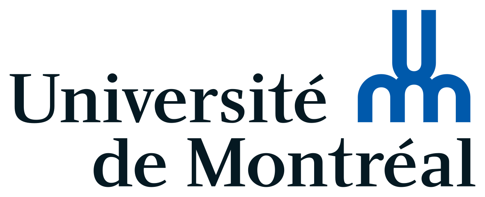

Extending Generalization in Reinforcement Learning
Last updated: June 10th, 2022
Description of the Project Development and Deadlines Updates

Student: Ronnie Liu (20154429)
Professor: Glen Berseth
Professor: Michalis Famelis
TBC
I'll be using the following links for now:
I start by taking notes about the basics of reinforcement learning. The lectures that I listened are given by professor Steven Brunton. The lectures give an overview of numerous RL methods that are model-based and model-free. I've decided to focus on the algorithm of Q-learning and DQN, since it will be useful for the main project. Since the mathematics and the logic behind the algorithms are quite complex, I've decided to link other papers or online tutorials that will explain deeply some of the concepts that I find interesting (i.e. Q-Learning).
In terms of implementation, I start by using the stable-baseline3 package and OpenAI. I will complete three small projects before diving into the concept of generalization in RL: Atari Game, [Project 2] and [Project 3].
Milestones:We review the basics and the importance of deep learning and reinforcement learning with the professor (back propagation, overfitting, etc.). We then discuss about the upcoming tasks that need to accomplish in order to be familiar with reinforcement learning. I decide to start with simple projects that are related with reinforcement learning.
Once I have completed some small projects, we then decide to work on the main project, which is morphology traning across different environments (expanding generalization of RL). If we have more time in the future, we can try to train with a fixed training data (off-policy idea).
We start by discussing the topic of the project. We have found one paper that talks about the concept of improving reinforcement learning with morphology-agnostic learning. The tasks that we've decided to train on were not confirmed yet, but we're going to use this paper as inspiration for this project. I've found some ideas that I can use as different tasks to train on different agents, like playing chess, the Atari Game, or training humanoids for control tasks (application of morphology-agnostic learning), but these are all brainstormed ideas for now.
Milestones: